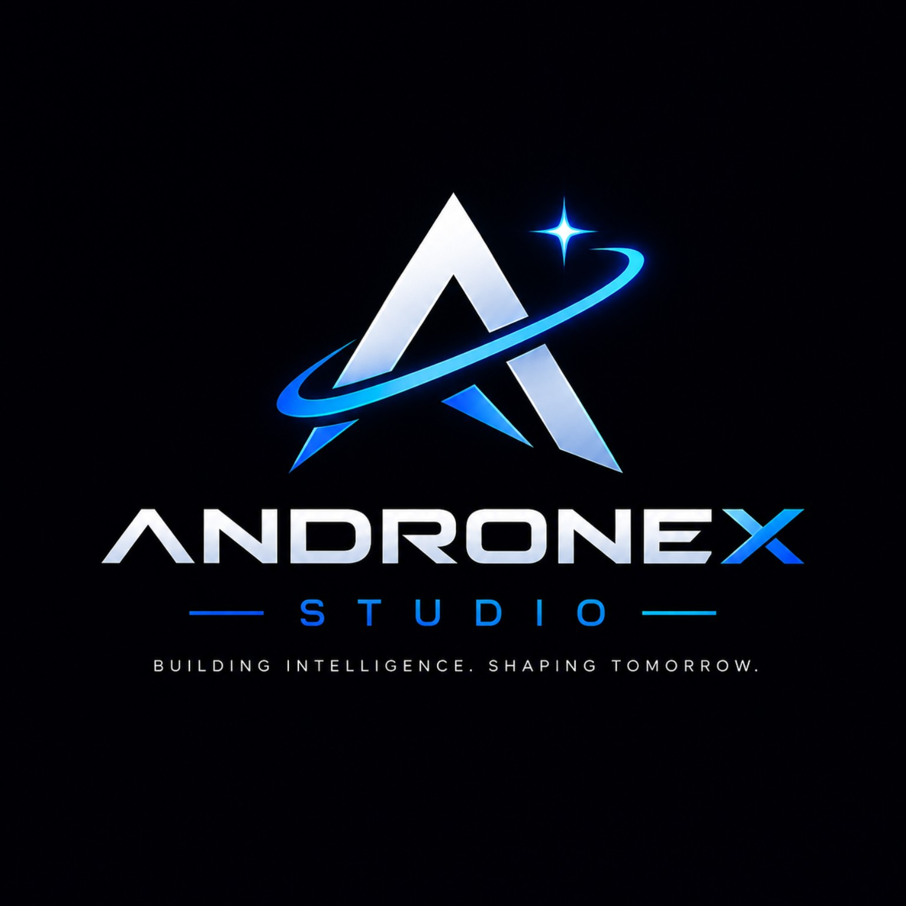
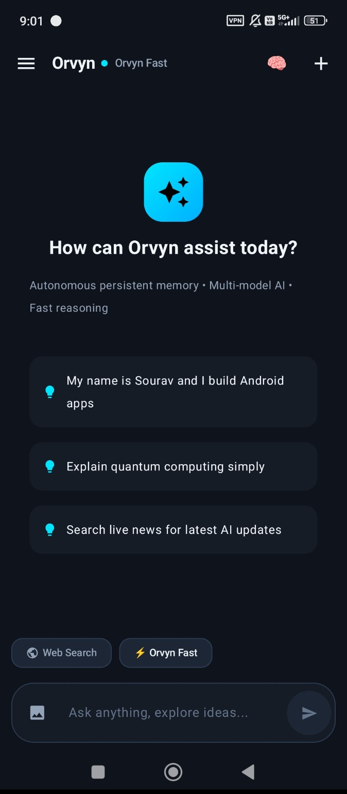

Conversational Intelligence
Designed to understand questions, explain complex topics, solve problems and support creative thinking.
CORE EXPERIENCE
More than a conversation. A vision for a more personal, adaptable and capable AI assistant. Explore conversational intelligence, persistent context, multi-model AI and research capabilities through an evolving AI project.
● FLAGSHIP AI PROJECT · IN DEVELOPMENTAndroid application · APK download via Google Drive

A preview of the Orvyn interface.
Exploring how different AI capabilities can work together in one accessible assistant.
Orvyn is an independent AI assistant project developed under Andronex Studio. Its broader vision is to move beyond isolated question-and-answer interactions and explore a more continuous, contextual and personalised AI experience.
Through experimentation with language models, memory systems, research tools and software architecture, Orvyn aims to explore new possibilities in everyday AI assistance.
Explore the technologies and features that shape Orvyn's development.
Designed to understand questions, explain complex topics, solve problems and support creative thinking.
CORE EXPERIENCEExploring persistent context and personalisation to create more consistent conversations.
MEMORY SYSTEMIntegrating different AI models to explore response quality, reasoning, speed and availability.
MODEL INTEGRATIONResearch-oriented capabilities for accessing information, investigating topics and exploring external sources.
RESEARCH MODEA growing collection of utility-oriented capabilities for calculations, problem-solving and everyday tasks.
PRODUCTIVITYAn accessible mobile-oriented interface designed to make AI assistance convenient for everyday use.
ANDROID EXPERIENCEOrvyn explores a recognisable conversational personality, contextual responses and adaptable communication. The goal is not simply to imitate human behaviour, but to create an approachable assistant that remains useful, transparent and focused on the user's needs.
Every ambitious project has an origin.
Orvyn grew from the experimentation behind SouravAI, the original AI assistant project that began this journey. Working with AI models, prompts and software tools helped shape a broader vision for a more personalised and versatile assistant.
SouravAI represents the beginning. Orvyn represents the next stage of that evolving vision.
An evolving project with a focus on capability, reliability and accessibility.
Improve response quality, usability and overall reliability.
Strengthen contextual understanding and persistent memory capabilities.
Explore information retrieval, research workflows and source attribution.
Explore additional ways to make Orvyn accessible across devices and platforms.
Download the Android application and explore the Orvyn AI experience.
⬇ Download Orvyn APKAndroid APK · Hosted on Google Drive
Orvyn is an evolving independent AI project. Features, capabilities and availability may change during development. Planned capabilities are not necessarily available in every build.